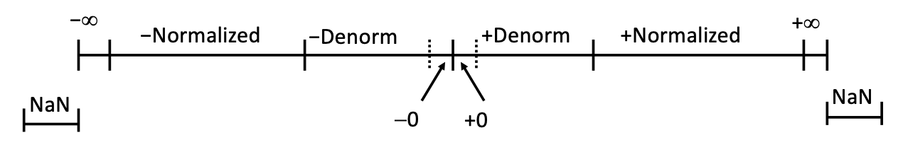

Chapter 2.Program Structure and Execution
约 2179 个字 -34 行代码 1 张图片 预计阅读时间 7 分钟
Lecture 2: Bits,Bytes, and Integer¶
| C Data Type | Typical 32-bit | Typical 64-bit | X86-64 |
|---|---|---|---|
| char | 1 | 1 | 1 |
| short | 2 | 2 | 2 |
| int | 4 | 4 | 4 |
| long | 4 | 8 | 8 |
| Float | 4 | 4 | 4 |
| double | 8 | 8 | 8 |
| long double | - | - | 10/16 |
| pointer | 4 | 8 | 8 |
Logic Operations in C¶
- 位运算符:
&,|,~ - 逻辑运算符:
&&,||,!
二者的区别
- 位运算符: 进行位运算, 作用于整数的二进制位,参与运算的只能是0或1,返回结果是二进制数字
- 逻辑运算符: 进行逻辑运算,只要是0就是假,非0就是真.返回结果只有真或假.并且逻辑运算符还有短路特性
Example
位运算符
- !0x41 = 0x00
- !0x00 = 0x01
- !!0x41 = 0x01
逻辑运算符
- 0x69 && 0x55 = 0x01
- 0x69 || 0x55 = 0x01
-
还可以用来避免空指针的问题
- p && *p 如果是0或者NULL,则不会执行后面的操作
Shift Operations¶
在C语言中,左移只有一种,而右移有两种,分别是逻辑右移和算术右移.逻辑右移是在左边补0,而算术右移是在左边补符号位.
自然我们想到一个问题,如果一个数字移位的位数超过了它本身的位数,那么会发生什么呢?
这个问题在C标准中并没有特定的做法,也就是说不同的编译器可能会有不同的结果.
假设我的数据有\(w\)位,而我需要移动\(k\)位(\(k \geq w\)).在许多机器上,移位操作只考虑最低的\(\log_2(w)\)位,也就是说移位\(k \mod w\)位.比如:对于\(w=32\),我要进行以下三个移位操作:
那么对于如上的三个操作,相当于分别移位了\(0,4,8\)位.得到如下结果:
对此我的理解是,对于移位操作,移动超过它本身的位数是没有意义的,所以对它进行取模操作.只移动\(k \mod w\)位.
原文
The C standards carefully avoid stating what should be done in such a case. On many machines, the shift instructions consider only the lower \(\log_2{w}\) bits of the shift amount when shifting a \(w\)-bit value, and so the shift amount is computed as \(k\mod w\).
Two's Complement¶
对于无符号二进制数,想转为十进制数,只需要将每一位乘以权重\(2^i\)相加即可.
而对于负数而言,它们在计算机中都是以补码的形式表示的,通常的办法是将补码转位原码,然后再转为十进制数.
但是实际上并不需要这么复杂,跟无符号数一样,只需要将每一位乘以权重\(2^i\)相加即可,但是注意符号位是负数,所以需乘以\(-2^w\).
二进制转十进制
无符号数:每一位对应如下权重(上面是位数,下边是十进制数(权重))
| 4 | 3 | 2 | 1 | 0 |
|---|---|---|---|---|
| 16 | 8 | 4 | 2 | 1 |
如果我有二进制数10110,那么对应的十进制数为:\(16+4+2=22\)
有符号数:每一位对应如下权重(上面是位数,下边是十进制数(权重))
| 4 | 3 | 2 | 1 | 0 |
|---|---|---|---|---|
| -16 | 8 | 4 | 2 | 1 |
同样的二进制数10110,对应的十进制数为:\(-16+4+2=-10\)
Values for Different Word Sizes¶
| 8 | 16 | 32 | 64 | |
|---|---|---|---|---|
| UMax | 255 | 65535 | 4294967295 | 18446744073709551615 |
| TMax | 127 | 32767 | 2147483647 | 9223372036854775807 |
| TMin | -128 | -32768 | -2147483648 | -9223372036854775808 |
我们发现如下规律:
- 对于无符号数,UMax是\(2^w-1\)
- 对于有符号数,TMax是\(2^{w-1}-1\),TMin是\(-2^{w-1}\)
- \(\vert \mathrm{TMin} \rvert = \mathrm{TMax} + 1\)
- \(\mathrm{UMax} = 2 \times \mathrm{TMax}+1\)
同时注意C语言中的隐式转换,如果有符号数和无符号数进行运算,那么有符号数会被转为无符号数.
Lecture 3: Bits,Bytes, and Integer(cont.)¶
既然我们已经有了补码,能够同时表示正数和负数,那么是不是我们就可以把无符号数直接扔掉呢?换句话说,无符号数有什么优势呢? - 用于模运算,在许多加密算法中,模运算是非常重要的 - 我们的位不代表数字,而是代表集合时,无符号数更加合适
Representations in memory,pointers,strings¶
Byte Ordering¶
- Big Endian: 高位字节存放在低地址.
- 例如:Sun,PPC Mac,Internet
- Little Endian: 低位字节存放在低地址
- X86,ARM processors running Android,iOS and Windows
例如,我有一串数字0x01234567,在内存中的表示如下(基地址为0x100):
Big Endian:
| 0x100 | 0x101 | 0x102 | 0x103 | ||
|---|---|---|---|---|---|
| 01 | 23 | 45 | 67 |
Little Endian:
| 0x100 | 0x101 | 0x102 | 0x103 | ||
|---|---|---|---|---|---|
| 67 | 45 | 23 | 01 |
Integer C Puzzles¶
-
If
x < 0,can we get((x*2) < 0)?✖ No.如果
x是负数,它乘以2之后可能会发生下溢,变成一个特别大的正整数. -
ux >= 0?✔ Yes.无符号数不可能小于0
-
If
x & 7 ==7,can we get((x << 30) < 0)?✔ Yes.如果
x & 7 == 7,那么x的低三位一定是111,而x是32位的,把它左移30位之后,符号为变成1,所以((x << 30) < 0)成立. -
Is
ux > -1right?✖ No.有符号数和无符号数比较,自动把有符号数转为无符号数,
-1二进制表示是全1,转为无符号数一定大于等于任何无符号数. -
If
x > y,can we get-x < -y?✖ No.如果
y是最小的负数,那么-y是它本身,而-x是一个正数,所以-x不一定小于-y. -
Is
x * x >= 0right?✖ No.可能会上溢.
-
If
x > 0 && y > 0,can we getx + y > 0?✖ No.一样可能上溢.
-
If
x >= 0,can we get-x <= 0?✔ Yes.如果
x是正数,而有符号数正数比负数少一个,所以正数取反在负数中一定有对应. -
Is
(x | -x) >> 31 == -1right?✖ No.
0 | -0 == 0,左移之后还是0.
Lecture 4: Floating Point¶
Floating Point Representation¶
所有的浮点数都可以表示为以下形式:
其中:s是符号位,M是尾数,E是指数.在单精度和双精度浮点数中,分别有32位和64位.
Encoding
- MSB S is sign bit s
- exp field encodes E(but is not equal to E)
- frac field encodes M(but is not equal to M)
| S | exp | frac |
|---|---|---|
在单精度浮点数中,一共32位.
| 1 bit | 8 bits | 23 bits |
|---|---|---|
| S | exp | frac |
在双精度浮点数中,一共64位.
| 1 bit | 11 bits | 52 bits |
|---|---|---|
| S | exp | frac |
另外,在intel的芯片中,还有80位的浮点数,称为extended precision.
| 1 bit | 15 bits | 64 bits |
|---|---|---|
| S | exp | frac |
Normalized Values¶
当 \(\mathrm{exp} \neq 000 \dots 0 \ \mathrm{and} \ \mathrm{exp} \neq 111 \dots 1\)时,我们称之为normalized values.
实际的指数 \(\mathrm{E} = \mathrm{Exp} - \mathrm{Bias}\).其中\(\mathrm{Bias} = 2^{k-1}-1\),其中\(k\)是指数的位数.
- 对于单精度浮点数,\(\mathrm{Bias} = 127\)
- \(\mathrm{E} = -126 \sim 127\)
- \(\mathrm{exp} = 1 \sim 254\)
- 注意,我们这里没有考虑到0和255,因为0和255并不是normalized values.
- 对于双精度浮点数,\(\mathrm{Bias} = 1023\)
- \(\mathrm{E} = -1022 \sim 1023\)
- \(\mathrm{exp} = 1 \sim 2046\)
而对于\(\mathrm{Frac}\),我们先把数字转为类似科学计数法的形式,整数部分只有一个1,然后把二进制的小数部分直接写到\(\mathrm{Frac}\)中.
Denormalized Values¶
这里我们的Frac部分就不是1.xxxxxx的形式了,而是0.xxxxxx的形式.这样的数值称为denormalized values.表示0以及很靠近0数值.
此时的指数\(\mathrm{E} = 1 - \mathrm{Bias}\),而\(\mathrm{exp} = 0\).
表示
- 当\(\mathrm{exp} = 000 \dots 0\)且\(\mathrm{frac} = 000 \dots 0\)时,表示0
- 当\(\mathrm{exp} = 000 \dots 0\)且\(\mathrm{frac} \neq 000 \dots 0\)时,表示很靠近0的数值
Special Values¶
当\(\mathrm{exp} = 111 \dots 1\)时,我们称之为special values.
- 当\(\mathrm{exp} = 111 \dots 1,\mathrm{frac} = 000 \dots 0\)时,表示\(\pm \infty\)
- E.g. \(1.0 / 0.0 = -1.0 / 0.0 = + \infty,1.0 / -0.0 = -\infty\)
- 当\(\mathrm{exp} = 111 \dots 1,\mathrm{frac} \neq 000 \dots 0\)时,表示NaN(Not a Number)
- E.g. \(sqrt(-1),\infty - \infty ,\infty \times 0\)
Visualization

Special Properties of the IEEE Encoding¶
- FP Zero Same as Integer Zero
- All bits are zero
- Can (Almost) Use Unsigned Integer Comparison
- Must first compare sign bits
- Must condiser \(-0 = 0\)
- For NaNs:
- Greater than any other values
- Otherwise OK
Floating Point Operations¶
Rounding¶
一共有四种舍入方式:
- Towards zero: 向0舍入
- Towards up \((+\infty)\): 向上舍入
- Towards down \((-\infty)\): 向下舍入
- Nearest Even: 舍入到最近的偶数
其中Nearest Even是最常用的舍入方式.前三种舍入方式都好理解,但是Nearest Even有一些特殊的规则:
- 如果小数部分不到一半,或者超过一半,则四舍五入
- 如果刚好在一半,我们要保证舍入后的最后一位是偶数.
Nearest Even
| 原数值 | 舍入结果 | 原因 |
|---|---|---|
| 2.8949999 | 2.89 | 不到一半,四舍五入 |
| 2.8950001 | 2.90 | 超过一半,四舍五入 |
| 2.8950000 | 2.90 | 刚好一半,保证最低位是偶数,向上舍入 |
| 2.8850000 | 2.88 | 刚好一半,保证最低位偶数,向下舍入 |
对于二进制也是一样的:
| 十进制 | 二进制 | 舍入结果 | 十进制 | 原因 |
|---|---|---|---|---|
| 2 又 3/32 | 10.00011 | 10.00 | 2 | 不到一半,四舍五入 |
| 2 又 3/16 | 10.00110 | 10.01 | 2 又 ¼ | 超过一半,四舍五入 |
| 2又 ⅞ | 10.11100 | 11.00 | 3 | 刚好一半,向上舍入 |
| 2 又 ⅝ | 10.10100 | 10.10 | 2 又 ½ | 刚好一半,向下舍入 |